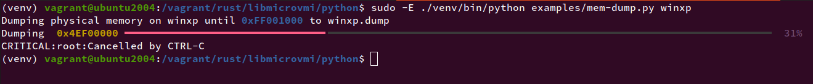

libmicrovmi
A cross-platform unified Virtual Machine Introspection API library


Table of Contents
Overview
libmicrovmi aims to provide a cross-platform unified Virtual Machine Introspection API.
The term micro (μ) refers to the library's simplicity as well as the letter U
standing for Unified interface.
Virtual Machine Introspection has been around since 2003, yet the ecosystem is still heavily fragmented and lacks standards as well as interoperability.
See Documentation: VMI Ecosystem Fragmentation
The main objective is to provide the simplest virtual machine introspection abstraction, offering a standard API to interact with any VMI provider.
The documentation keeps track of libmicrovmi's integration status for each VMI apps.

Documentation
Our documentation is available in doc/ as an mdbook 📖
To build the docs locally:
$ cargo install mdbook
$ mdbook build doc
$ xdg-open doc/book/index.html
Maintainers
License
GNU General Public License v3.0
Installation
This section will teach you how to:
- install libmicrovmi either from official repositories or source code
Packaged installation
This section details how to install the officially distributed version of libmicrovmi.
libmicrovmi is accessible through the following languages
- Rust
- C
- Python
It comes bundled by default with the following Linux drivers:
- Xen
- KVM
- VirtualBox
Rust - Crates.io
The crates is available on crates.io:
C - Debian package
A Debian package is available on Github releases:
It contains both the library and the headers to get started with C development
/usr/lib/libmicrovmi.so/usr/include/libmicrovmi.h
Python - PyPI
libmicrovmi is exposing a Python interface through a native extension.
The package microvmi is available on PyPI:
Note: this extension is completely independant from any existing libmicrovmi.so installation on you system. Hence you don't have to install the debian package above.
Compilation from Source
This sections details how to compile libmicrovmi from source.
You might want to dive into it if you are interested by:
- compiling a specific driver that is not available by default in the officially distributed version
- developing libmicrovmi
- add a new driver
- extend the APIs
We assume that you have a working Cargo stable toolchain.
⚠️ Note: each driver depends on development headers to be install in order to generate the bindings from C to Rust.
For any driver, clang is a required dependency:
$ sudo apt-get install clang
Please look at the driver reference section of the documentation.
Cloning libmicrovmi
Clone the repo:
$ git clone https://github.com/Wenzel/libmicrovmi
Rust
Compilation for a Rust crate is as simple as using cargo:
$ cargo build --features xen,kvm
C
The C library is generated by default when building the microvmi crate.
The output files will be located at:
target/<debug|release>/libmicrovmi.so : the C library
target/<debug|release>/capi/libmicrovmi.h : the development header
Python
To build the native Python extension, create a virtualenv and run ./setup.py:
$ cd libmicrovmi/python
$ python3 -m venv venv
$ source venv/bin/activate
(venv) $ python -m pip install --upgrade setuptools
(venv) $ python -m pip install -r requirements.txt
(venv) $ ./setup.py install --features xen,kvm
Note:
./setup.py install: will create a release build./setup.py develop: will create a debug buildpip install .is NOT available due a to an issue in setuptools-rust/Maturin. Do not usepip.
Memory dump example on Xen
This tutorial will walk you through the steps required to compile libmicrovmi and run
the mem-dump Rust example code on a Xen domain in order to dump its physical memory.
This tutorial assumes the following:
- you have a working cargo stable toolchain
- you have a running VM supervised by Xen 4.11.0 or above.
- you are running on Ubuntu 20.04
Requirements
clang(bindgen)- Xen development headers
To install the additional dependencies:
$ sudo apt install clang libxen-dev
⚠️ Note: Accessing Xen's introspection APIs will require high privileges as we are talking to Dom0,
hence we have to run cargo as root when actually running and testing example code.
Memory-dump example in Rust
In this tutorial chapter, we will run the mem-dump.rs Rust example code
to dump the physical memory of a domain.
First, we will compile libmicrovmi with the Xen driver enabled:
$ cd libmicrovmi
$ cargo build --features xen
Running the example
Next, let's run the example on your domain <vm_name>:
$ sudo -E ~/.cargo/bin/cargo run --features xen --example mem-dump <vm_name>
Expected output:

Toggle debug output
In case an error would arise, the logging output can be toggled with RUST_LOG env var
and offer more detailed information:
$ export RUST_LOG=debug
$ sudo -E ~/.cargo/bin/cargo run --features xen --example mem-dump <vm_name>
Memory-dump example in C
In this tutorial chapter, we will run the mem-dump.c C example code
to dump the physical memory of a domain.
First, we will compile libmicrovmi with the Xen driver enabled:
$ cd libmicrovmi
$ cargo build --features xen
Install cbindgen
cbindgen is a tool for automatically generating C header files that expose
a Rust library's FFI.
To install it:
$ cargo install --force cbindgen
Building mem-dump C example
$ cd c_examples/
$ make mem-dump
Running the example
Next, let's run the example on your domain <vm_name>:
$ sudo LD_LIBRARY_PATH="$LD_LIBRARY_PATH:../target/debug" ./mem-dump <vm_name>
⚠️ Note: libmicrovmi.so has been generated by cargo into target/debug.
We have to set LD_LIBRARY_PATH so that mem-dump is able to find the libary.
Expected output:

Memory-dump example in Rust
In this tutorial chapter, we will run the mem-dump.py Python example to dump
the physical memory of a domain, thanks to libmicrovmi Python bindings.
First, let's create a virtualenv and install the bindings with the Xen driver enabled:
$ cd libmicrovmi/python
$ python3 -m venv venv
$ source venv/bin/activate
(venv) $ python -m pip install --upgrade setuptools
(venv) $ python -m pip install -r requirements.txt
(venv) $ ./setup.py install --features xen
Running the example
The examples/mem-dump.py script is based on the rich library for an enhanced output.
As they are only needed for example code, the requirements are kept in a separate file.
Let's install them:
cd libmicrovmi/python
(venv) $ python -m pip install -r examples/requirements.txt
Now you can run the example on your domain <vm_name>:
$ sudo -E ./venv/bin/python examples/mem-dump.py <vm_name>
Expected output:

Integration
libmicrovmi aims to be combined with a great diversity of VMI projects.
In this section you will find detailed tutorials to integrate and exploit your favorite tools on top of libmicrovmi.
Please refer to the Integration Status page for an overview of libmicrovmi's compatibility with existing integrations.
volatility3
volatility3 is a framework for extracting digital artifacts and performing forensic investigation on RAM samples.
Combined with libmicrovmi, you can run volatility3 on top of a live virtual machine's physical memory.
Thanks to volatility3's modular architecture the libmicrovmi integration doesn't require any upstream modification. Instead we need to indicate to volatility3 how to locate our plugin.
Setup
This guide assumes you already have a working installation of libmicrovmi Python in a virtualenv. Please refer to the documentation.
We need the development version of volatility3, from git:
(venv) $ git clone https://github.com/volatilityfoundation/volatility3
(venv) $ cd volatility3
(venv) $ pip install .
The microvmi python package comes with a volatility
directory which contains the connection plugin.
We need to add this directory to volatility's search path.
To locate the volatility directory in your venv:
(venv) $ find venv/ -type d -wholename '*microvmi/volatility*'
venv/lib/python3.7/site-packages/microvmi/volatility
Usage
VMI scheme URL
The libmicrovmi handler for volatility is a URL handler with the following syntax:
vmi://[hypervisor]/?param1=value1...
The hypervisor part is optional. If not specified, it will default to try every builtin driver available.
Additional driver parameters can be specified.
To pass the VM name:
vmi:///?vm_name=windows10
To pass the KVMi socket:
vmi:///?vm_name=windows10&kvm_unix_socket=/tmp/introspector
Running volatility3
Let's put all of this together and run volatility3 combined with libmicrovmi.
-p <plugin_dir>--single-location vmi://url
(venv) $ vol -p <plugin_dir> --single-location vmi:///?vm_name=windows10 <volatility plugin>
Example listing processes on Xen
(venv) $ sudo -E ./venv/bin/vol \ # running volatility3 as root (required by the Xen driver)
-p venv/lib/python3.7/site-packages/microvmi/volatility \ # path to the microvmi connection plugin
--single-location vmi:///?vm_name=winxp \ # specify the resource location
windows.pslist.PsList # volatility's pslist plugin
API

Python API
Initializing libmicrovmi
from microvmi import Microvmi, DriverInitParamsPy, CommonInitParamsPy
# setup common params
common = CommonInitParamsPy()
common.vm_name = "windows10"
# setup main init_params
init_params = DriverInitParamsPy()
init_params.common = common
micro = Microvmi(None, init_params)
Specifying the hypervisor
from microvmi import Microvmi, DriverType, DriverInitParamsPy, CommonInitParamsPy
# setup common params
common = CommonInitParamsPy()
common.vm_name = "windows10"
# setup main init_params
init_params = DriverInitParamsPy()
init_params.common = common
micro = Microvmi(DriverType.XEN, init_params)
Adding driver initialization parameters
from microvmi import Microvmi, DriverInitParamsPy, CommonInitParamsPy, KVMInitParamsPy
# setup common params
common = CommonInitParamsPy()
common.vm_name = "windows10"
# setup kvm params
kvm = KVMInitParamsPy()
kvm.unix_socket = "/tmp/introspector"
# setup main init_params
init_params = DriverInitParamsPy()
init_params.common = common
init_params.kvm = kvm
micro = Microvmi(DriverType.KVM, init_params)
Drivers
This section documents the drivers available and the requirements to compile them.
Features
| Feature | Description |
|---|---|
xen | Build the Xen driver |
kvm | Build the KVM driver |
virtualbox | Build the VirtualBox driver |
mflow | Build the memflow driver |
Example
$ cargo build --features xen,kvm
Rust API initialization parameters
To initialize each Driver from the Rust API,
please check DriverInitParams.
Xen
$ sudo apt install clang libxen-dev
Compatibility: Xen >= 4.11.0
KVM
The KVM driver depends on libkvmi
$ git clone https://github.com/bitdefender/libkvmi.git
$ cd libkvmi
$ git checkout bf5776319e1801b59125c994c459446f0ed6837e
$ ./bootstrap
$ ./configure
$ make
$ sudo make install
VirtualBox
The VirtualBox driver depends on libFDP
$ git clone --depth 1 https://github.com/thalium/icebox
$ cd icebox/src/FDP
$ g++ -std=c++11 -shared -fPIC FDP.cpp -o libFDP.so
$ sudo mv include/* /usr/local/include/
$ sudo mv libFDP.so /usr/local/lib/
Memflow
Please follow the instructions at memflow
Integration Status
This section gives a status overview of libmicrovmi's integration into other applications and libraries based on virtual machine introspection.
| Project | Supported |
|---|---|
| LibVMI | 🟠 |
| volatility3 | ✅ |
LibVMI
API Compatibility Status
LibVMI driver layer could be replaced by libmicrovmi.
The API is used in the following files:
| API | Supported | Observations |
|---|---|---|
driver_init_mode() | 🟠 | |
driver_init() | 🟠 | |
driver_init_vmi() | 🟠 | |
driver_domainwatch_init() | ||
driver_destroy() | ✅ | |
driver_get_id_from_name() | ||
driver_get_name_from_id() | ||
driver_get_id_from_uuid() | ||
driver_get_id() | ||
driver_set_id() | ||
driver_check_id() | ||
driver_get_name() | ||
driver_set_name() | ||
driver_get_xsave_info() | ||
driver_get_memsize() | ||
driver_request_page_fault() | ||
driver_get_tsc_info() | ||
driver_get_vcpumtrr() | ||
driver_get_vcpureg() | ✅ | |
driver_get_vcpuregs() | ||
driver_set_vcpureg() | ||
driver_set_vcpuregs() | ||
driver_mmap_guest() | ||
driver_write() | ||
driver_is_pv() | ||
driver_pause_vm() | ✅ | |
driver_resume_vm() | ✅ | |
driver_events_listen() | ||
driver_are_events_pending() | ||
driver_set_reg_access() | ||
driver_set_intr_access() | ||
driver_set_mem_access() | ||
driver_start_single_step() | ||
driver_stop_single_step() | ||
driver_shutdown_single_step() | ||
driver_set_guest_requested() | ||
driver_set_cpuid_event() | ||
driver_set_debug_event() | ||
driver_set_privcall_event() | ||
driver_set_desc_access_event() | ||
driver_set_failed_emulation_event() | ||
driver_set_domain_watch_event() | ||
driver_slat_get_domain_state() | ||
driver_slat_set_domain_state() | ||
driver_slat_create() | ||
driver_slat_destroy() | ||
driver_slat_switch() | ||
driver_slat_change_gfn() | ||
driver_set_access_required() | ||
get_data() | ✅ | |
release_data() | ✅ |
volatility3
volatility3 could inspect and run its forensics plugins on live memory by adding a new URL handler.
VMI API
This section describes what can be done with a virtual machine introspection API
- Query and modify the VM hardware state
- read/write VCPU registers
- read/write physical memory
- Subscribe and listen to hardware events
- mov to/from CR3/CR8
- mov to/from DRx
- mov to/from MSR
- interrupts
- singlestep (MTF)
- hypercalls
- descriptors
- SLAT (Second Level Address Translation) events
r/w/xevent on a page- dynamically switch to multiple memory views using alternate SLAT pointers
- Intel Processor Trace packets
- Utilities
- foreign mapping
- pagefault injection
Xen
VMI APIs are available upstream since Xen 4.1
-
Accessing the VM's hardware state
- get number of VCPUs: ✅
- get maximum gfn: ✅
- pause/resume: ✅
- r/w physical memory: ✅
- r/w virtual memory: ✅
- r/w VCPU registers: ✅
-
Intercept VM's hardware events
- control registers: ✅
- extended control registers: ✅
- debug registers: ✅
- MSR: ✅
- singlesteps: ✅
- interrupts: ✅
- descriptors: ✅
- hypercalls: ✅
- CPUID: ✅
- memory: ✅
- alternate SLAT: ✅
-
Utilities:
- foreign mapping: ✅
- exception injection: ✅
KVM
VMI APIs are currently being developed by BitDefender, and in review on the mailing list.
-
Accessing the VM's hardware state
- get number of VCPUs: ✅
- get maximum gfn: ❌
- pause/resume: ✅
- r/w physical memory: ✅
- r/w virtual memory: ❌
- r/w VCPU registers: ✅
-
Intercept VM's hardware events
- control registers: ✅
- extended control registers: ❌
- debug registers: ✅
- MSR: ✅
- singlesteps: ❌
- interrupts: ✅
- descriptors: ✅
- hypercalls: ✅
- CPUID: ❌
- memory: ✅
- alternate SLAT: ❌
-
Utilities:
- foreign mapping: ✅
- exception injection: ✅
Note:
SLAT: Second Level Address Translation
VMI Fragmentation
Virtual Machine Introspection has been around since 2003, yet the ecosystem is still heavily fragmented and lacks standards as well as interoperability.
See our talk at FOSDEM 2020: Rustifying the Virtual Machine Introspection ecosystem.
Debugging
Live Memory Forensics
Dynamic Analysis
Cloud Monitoring
Fuzzing
Libraries
Python Bindings
Nox
The project uses Nox to facilite and automate the developer workflow. Please install this tool before you start
Running nox without any argument will run the default sessions.
Generating the Wheels
Distributing a Python native extension compatible with many systems and a large set of Python interpreters is a challenging task.
The manylinux project comes to the rescue here.
The extension is built based on the manylinux2014 platform tag.
Generation of the wheels is managed by nox and requires Docker to build a custom manylinux2014 CentOS image, and
execute the script inside it.
To start the generation:
$ cd libmicrovmi/python
$ nox -r -s generate_wheels -- --features xen
you can activate more drivers
$ nox -r -s generate_wheels -- --features xen,kvm,virtualbox
and enable the release mode as well
nox -r -s generate_wheels -- --features xen --release
After the execution, the wheels will be available in libmicrovmi/python/dist/manylinux.
Testing Volatility
Nox provides sessions to facilitate testing the volatility integration on a given driver.
For Xen:
nox -r -s test_volatility_xen -- vmi:///....
To list nox sessions:
nox -l